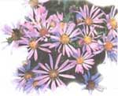
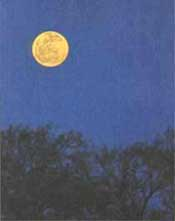
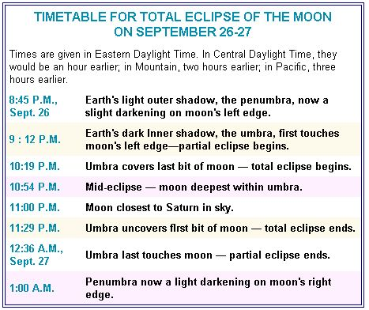

There may be chills on August and September nights, and we may be regretting that summer is waning. But there are flowers aplenty at this time of year, and many of them have something in common Thoreau noticed. In his journal in 1853 he asked: "Do not the flowers of August and September generally resemble suns and stars - sunflowers and asters and the single flowers of the goldenrod?"
We might consider sunflowers and goldenrod (which, by the way, is confused with ragweed but is brighter and is not responsible, like ragweed, for great numbers of allergy problems). But, this time, let's focus on the usually lavender flowers whose color complements so well the great fields of goldenrod they often bloom among - let's focus on the aster.
As Thoreau well knew, the word aster is Greek for "star" - as in astronomy (study of the stars) and asteroids (little worlds so small they look "starlike" in the telescope). The flower part of these long- stalked plants do look like stars - what seem like their petals are finer and more numerous than those of daisies (another flower named for the sun - the original name was "day's-eye"; the eye of day, of course, being the sun).
In reality, the bloom of the aster is a flower head, each one of the "petals" is itself a flower.
In the aster, the "rays" of the star spread out from a central "disk" (reminiscent of a daisy's center) which is typically yellow. But the disk may turn to purple or to dark red as it gets pollinated. Not all asters have "ray" flowers that are lavender either - there are various shades of blue and purple and white.
About 150 species of aster grow in the United States, and although they are more common in the eastern half of the country, they grow throughout the western half, too. Distinguishing the different types is not always easy. The best way to do it is usually by the leaves.
Asters are most common in fields and roadsides, but some varieties thrive in swamps and woods, even down by the seashore.
After an August day of looking at asters, what better way to continue the star theme than by watching for shooting stars on August nights.
There is no time of year when shooting stars-meteors-are more common than in the first half of August. The most important reason is the Perseid meteor shower. A meteor shower is an increased number of meteors all appearing to zoom out from a particular point or small area in the constellations. The great August display features meteors streaking out of a spot in the constellation Perseus, which is in the northeast around midnight but high in the north by around 3 or 4 A.M. Midnight is early enough to see quite a few Perseids, but typically you'll see many more per hour in the predawn hours.
When you witness a meteor, you are seeing a bit of space dust or space rock burning up from friction as it enters our upper atmosphere at speeds often much in excess of 100,000 mph. The Perseid shower often produces the highest hourly rates of the year-if you get a clear night far out in the country you can see dozens of them per hour (plus many meteors from other directions-count these separately).
The Perseids are quite plentiful for several nights. But get your lawn chair and a friend out with you especially on the night of August 11-12. There is even a small chance of seeing a great outburst of hundreds of Perseids in the evening of August 11 this year.
Another night for skywatchers to mark on their calendar this year is the night of September 26-27. It would be enough if that were just the night of a total lunar eclipse. But it happens to be an eclipse of the harvest moon, and that night happens to be the one when Saturn is at its brightest,
biggest, and best for the year - right next to the dimmed and beautifully reddened moon.
Harvest moon is the full moon nearest to the autumn equinox, the start of autumn. Usually the moon rises about an hour later each night, but around the time of harvest moon the interval is much less. For several nights the moon comes up around nightfall, providing farmers with a prolonged period of light in which to harvest.
Harvest moon happens every year, but a total eclipse of the moon doesn't. There were no total lunar eclipses in 1994 or 1995, and there will be no total lunars visible from the United States after this year until 2000. Some of you readers will vividly recall the total lunar eclipse back on April 3, 1996, but only some of you; for even in New England and the Mid-Atlantic states the event occurred just after moonrise, and across the rest of the United States the total portion of the eclipse was ending or already over by the time the moon came up.
The eclipse on the night of September 26-27 will be more fully available to more Americans. People from the Great Plains on east get to see all of the total portion of the eclipse, and the western part of the contiguous United States can view some of the total portion.
The accompanying timetable shows that the eclipse takes place entirely in the evening in the United States, except for on the East Coast, where the last trace of Earth's central shadow, the umbra, moves off the moon at 12:36 A.M. EDT.
What's most fascinating about total lunar eclipses is seeing how dark they get, and what colors appear on the moon. This eclipse is likely to be a fairly light one, and its overall color a pink or orange. But there may be dark patches in Earth's shadow and many lovely tints visible with naked eye, binoculars, and telescope.
One thing that is sure is that when the sky darkens during the eclipse, a point of light just below the moon will brighten greatly. The object seeming to kindle spectacularly will be the planet Saturn. It is at "opposition" - exactly opposite the sun in the sky - on the same day that the moon is, this day of the eclipse. A telescope will show the rings of Saturn tilted enough for a good view.
Rosh Hashanah, the Jewish New Year, begins at the sunset nearest to the new moon that is closest to the autumn equinox This is a lunar calendar (as is that of another major Western religion, Islam), and its beginning is tied to the start of autumn. We can more easily understand the spring equinox as a beginning. What's the rationale behind starting the year with early fall?
The idea of many calendars that begin with autumn equinox must be that the old year ends with harvest, reaches its midway or highest point when farmers do most of their planting. Of course, there may be other reasons-connected with various aspects of religion, history, and culture, too. But perhaps the phrase that just drew your attention most strongly was "many calendars." Which other than the Jewish appear to be keyed to the autumn equinox?
Five others quickly come to mind. One is still used, and the past importance of three of them is reflected by the fact that they still appear in many almanacs. One in this latter class is the Byzantine, which begins year 7505 on September 14, 1996. Another is the calendar based on the Diocletian era. This starts from the year 284 A.D., when Diocletian became emperor of the Roman Empire. September 11, 1996 is the start of year 1713 in the Diocletian era.
The Spartan, with its roots in ancient Greece, is a now seldom-remembered calendar beginning around autumn equinox. Greece was divided into many citystates, each extremely independent, and military Sparta was one of the most powerful. But these city-states were conquered by Alexander the Great, whose calendar also started at autumn equinox. (Quick, can you name the months of the Macedonian year? Here they are, courtesy of Guy Ottewell: Dius, Apellaeus, Audynaeus, Peritius, Dystrus, Xanthicus, Artemisius, Daesius, Panemus, Loeus, Gorpiaeus, Hyperberetaeus.)
Another autumnal calendar is still in use by Syriac Christian churches. In 312 B.C. Seleucus I got control of most of the late Alexander's empire. Year 2308 of the Grecian or Seleucidae era begins, depending on your source, on either September 14 or October 14 of 1996.
1 Lammas ("loaf-mass"), an old harvest festival, also known as the festival of St. Peter's Chains, of the Maccabees, or as the Gule ("mouth") of August; Lugnasad, the Gaelic "games of Lug," the sun god.
2 Moon fairly near Saturn tonight and tomorrow night.
3 In 1970 a gust of 161 mph was measured from Hurricane Celia in Corpus Christi, Texas
6 LAST QUARTER MOON, 1:26 A.M. EDT.
7 Halfway point of summer.
8 Moon near star Aldebaran this morning (look in east about 5:15 A.M. EDT).
10 Begin looking for Perseid meteors from the northeast this evening, and into the predawn hours (see August 11); moon near Venus and Mars in east before dawn.
11 Peak of the Perseid meteors tonight (see text of column for more details); end of the Dog Days (according to one tradition about when they occur).
12 Victory Day (in Rhode Island); look for more Perseid meteors tonight.
13 Venus near Beehive star cluster (use binoculars) this morning and next-look for Venus as brightest point of light in east around 5 A.M. EDT.
14 NEW MOON, 3:55 A.M. EDT.
16 Bennington Battle Day (in Vermont).
17 Mars, not far from brilliant Venus, is at its dimmest; extremely low barometric pressure of 26.73 inches recorded before Hurricane Camille hit Mississippi this day in 1969.
19 Venus at greatest morning elongation from the sun (46 degrees) - but looks more exactly half-lit in telescopes a few days later.
21 FIRST QUARTER MOON, 11:38 P.M. EDT; Mercury at greatest evening elongation but hardly visible.
22 Sun enters the astrological sign Virgo.
26 Women's Equality Day; spring begins in the northern hemisphere - of Mars.
28 FULL MOON, 1:53 P.M. EDT - sturgeon moon, green corn moon, or grain moon.
30 Mars 6 degrees (a bit more than half your fist's width out at arm's length) south of Gemini star Pollux this morning - with Venus not far off; moon near Saturn tonight.
1 Venus 9 degrees south of Pollux, with Mars not far off (look in east about 5:45 A.M. EDT).
2 LABOR DAY; temperature hit 126 °F. in Mecca, California, in 1950.
3 Jupiter begins its usual (slow) eastward motion among the stars agains - it is the brilliant point of light in the south near the top of the teapot pattern of Sagittarius at nightfall (a telescope shows a beautiful starry background, and the globular star duster M22 nearby).
4 LAST QUARTER MOON, 3:07 P.M. EDT; brilliant Venus 3 degrees south of much dimmer Mars with stars Pollux and Castor not far above them - beautiful sight, in east about 5:45 A.M. EDT.
6 This morning and next, a nearly perfect lineup (from lower right to upper left) of brilliant Venus, much dimmer Mars, and the stars Pollux and Castor (both a bit brighter than Mars).
8 Grandparents Day.
9 Admission Day in California; 36.4 inches of rain in 18 hours and 38.2 inches of rain in 24 hours fell at Thrall, Texas, in 1921.
10 Moon near Venus and Mars in east this morning (look around 5:45 A.M. EDT), a gorgeous gathering; Jupiter (bright in the south at nightfall) reaches the farthest south in the heavens in its 12-year orbit; sun enters constellation Leo.
11 Start of Diocletian year 1713 (see text of column for more on this).
12 NEW MOON, 7:09 P.M. EDT; Rosh Hashanah begins at sunset-start of Jewish year 5727 A.M. (see text of column for more on this); Defenders Day in Maryland.
13 Rosh Hashanah (began yesterday at sunset); Friday the 13th - it can occur one, two, or (least often) three times a year - this year, it happens twice, the second time is in December.
14 Start of the Byzantine year 7505; either today or October 14 is start of Seleucidae year 2308 (see text of column); Great Atlantic Hurricane of 1944 hit Cape Hatteras, N.C., raked past New Jersey and Long Island, and hit southeastern Massachusetts (390 people were lost at sea).
16 Sun enters the constellation Virgo (longest in the zodiac).
17 Citizenship Day; Mercury at inferior conjunction with the sun, and unviewable.
20 FIRST QUARTER MOON, 7:24 A.M. EDT; moon fairly near Jupiter tonight.
21 Mars right in (really, in front of) the Beehive star cluster (M44 in Cancer the Crab) - use binoculars or telescope.
22 AUTUMN EQUINOX (start of autumn in Earth's northern hemisphere, days and nights are of equal length all over the world, sun rises due east and sets due west), 2:00 P.M. EDT; Yom Kippur begins at sunset.
23 Yom Kippur (began yesterday at sunset).
24 Temperature hit -9°F at West Yellowstone, Montana, this date in 1926.
26 FULL MOON and harvest moon, 10:52 P.M. EDT-and TOTAL ECLIPSE OF THE MOON with Saturn at opposition nearby (see text of column for details)!
27A small telescope will show a little star just south of Jupiter tonight - along with Jupiter's similarly bright Galilean moons, to either side of the planet.
|
 |
 |
 |